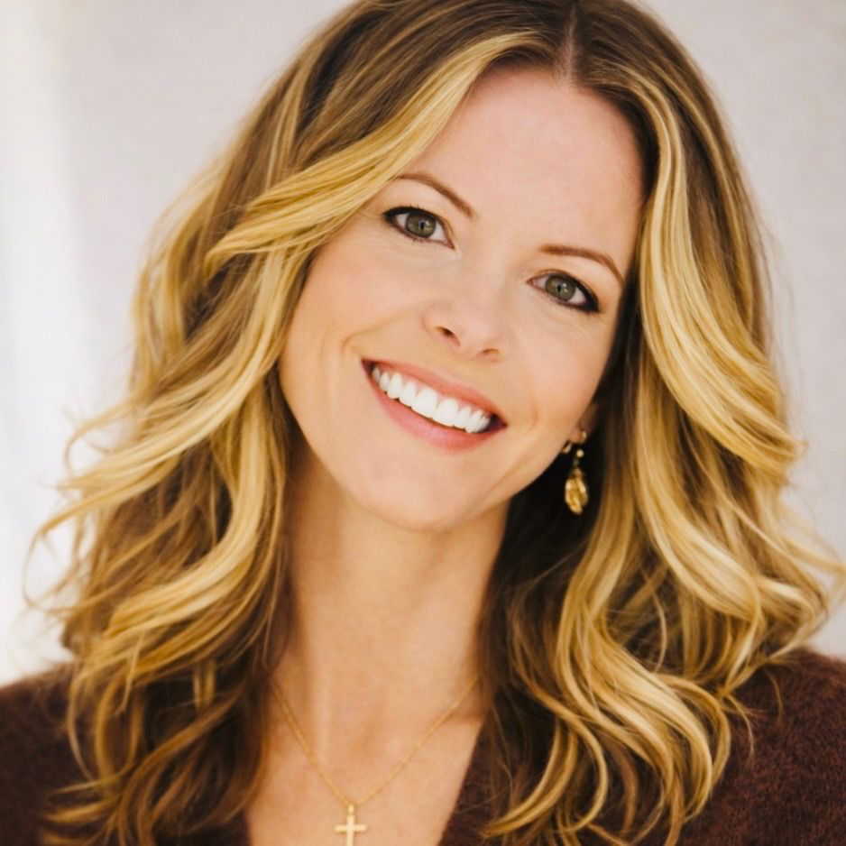

Knew You brings together beauty, personal care, health, and community — creating a place designed to support the restoration of the whole person.

Licensed Cosmetologist
& Community Builder
For the past 18 years, I've worked as a licensed cosmetologist while also leading initiatives in community building and education — walking alongside women and families through seasons of change, growth, and transition.
As a coach with training in integrative care and birth support, my work has grown beyond personal services into creating environments that help individuals and families reconnect with dignity, stability, and meaningful community.
My journey has taken me across five countries — learning from different cultures and traditions of care, hospitality, and restoration. Those experiences helped shape the vision behind Knew You.
Today, that vision is taking shape as a place where beauty, personal care, health, faith, and community come together — bringing this work full circle back to the community where my roots began.
Restoration begins when people are cared for as whole individuals — and when families have a place where they can belong.
— Kalee